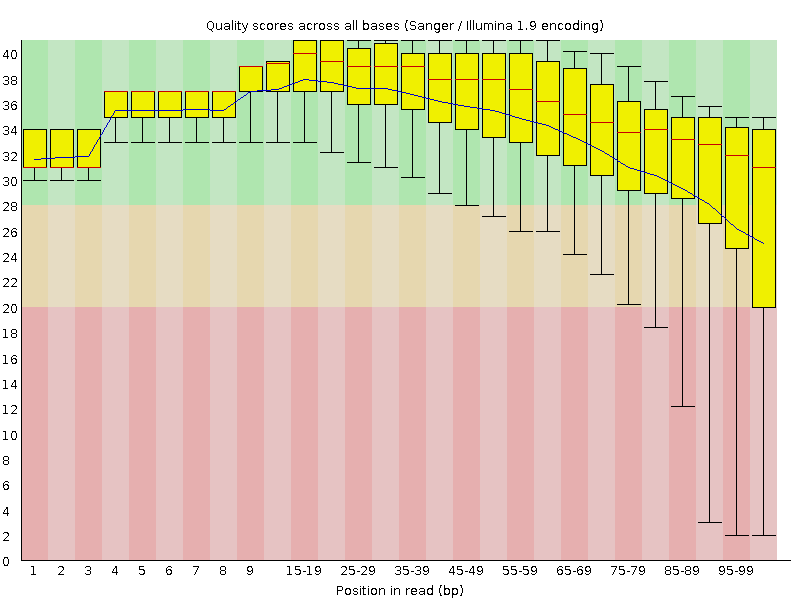
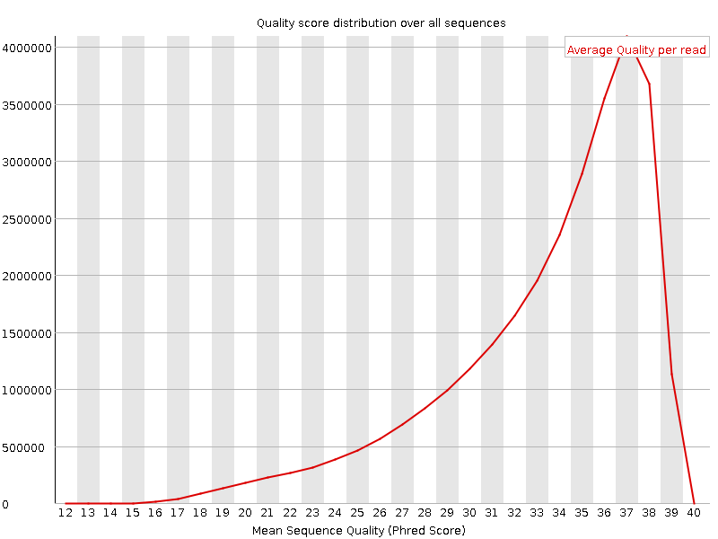
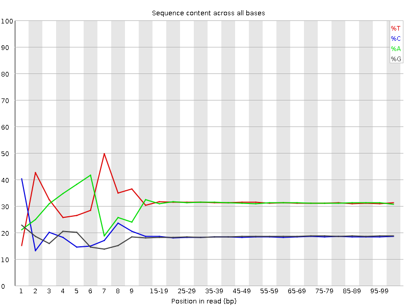
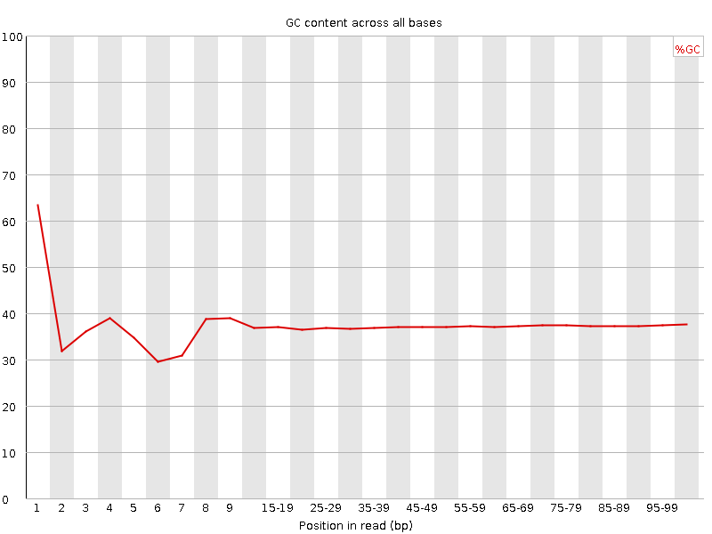
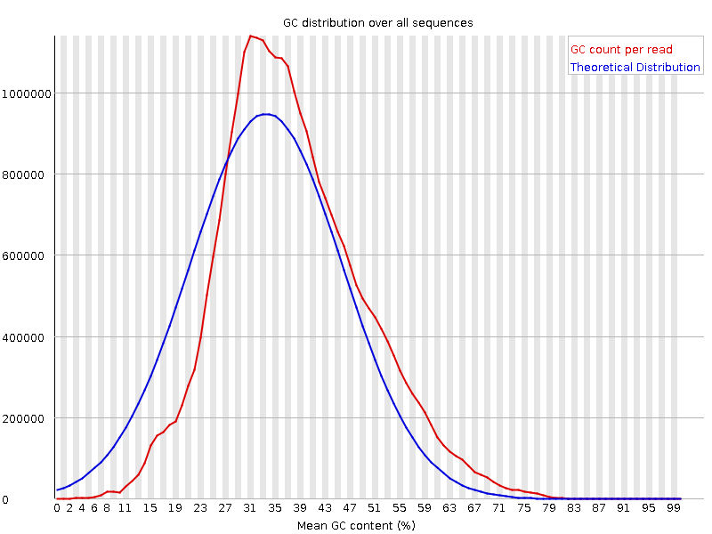
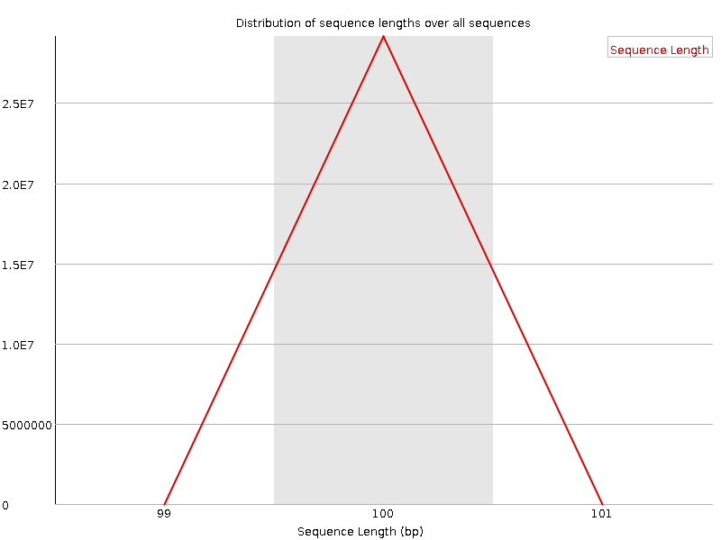
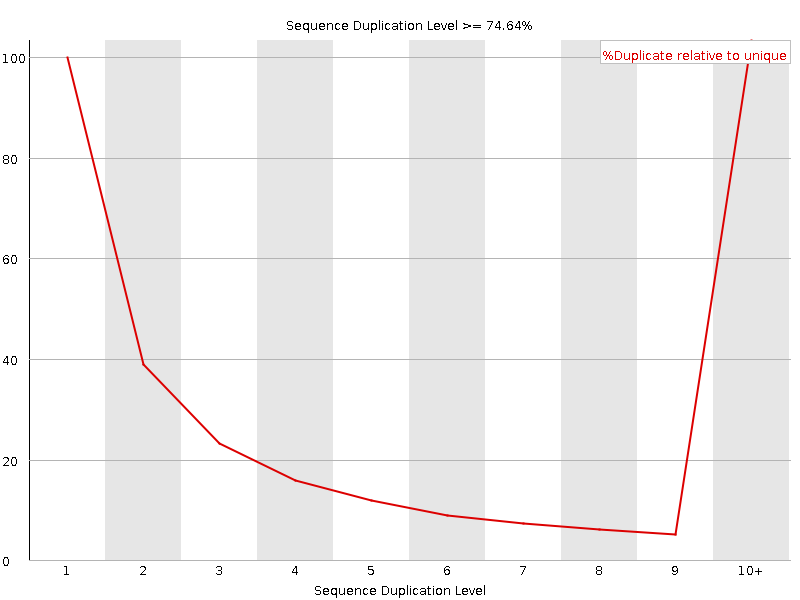
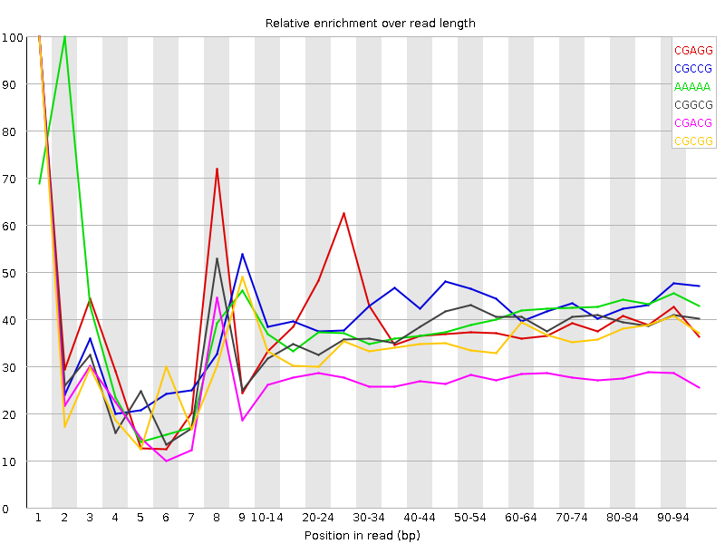

![[OK]](Icons/tick.png) Basic Statistics
Basic Statistics
| Measure | Value |
|---|---|
| Filename | c5_1.fq |
| File type | Conventional base calls |
| Encoding | Sanger / Illumina 1.9 |
| Total Sequences | 29145865 |
| Filtered Sequences | 0 |
| Sequence length | 100 |
| %GC | 37 |
Per base sequence quality

Per sequence quality scores

![[FAIL]](Icons/error.png) Per base sequence content
Per base sequence content

Per base GC content

![[WARN]](Icons/warning.png) Per sequence GC content
Per sequence GC content

Per base N content

Sequence Length Distribution

Sequence Duplication Levels

Overrepresented sequences
| Sequence | Count | Percentage | Possible Source |
|---|---|---|---|
| CTAATTTTCATCTTAATTCAACATCGAGGTCGCAAACATCTTTATCTATA | 60625 | 0.2080054923743042 | No Hit |
| CTTTCGTACAATTAATTAATATTTTATTATAGATAGAAACCAATCTGACT | 49561 | 0.17004470445464562 | No Hit |
Kmer Content

| Sequence | Count | Obs/Exp Overall | Obs/Exp Max | Max Obs/Exp Position |
|---|---|---|---|---|
| CGAGG | 2397520 | 2.2796333 | 5.7206473 | 1 |
| CGCCG | 1443610 | 2.2729456 | 5.3866076 | 1 |
| AAAAA | 18587350 | 2.2394617 | 5.634521 | 2 |
| CGGCG | 1334135 | 2.1151607 | 5.5792985 | 1 |
| CGACG | 2207740 | 2.084713 | 7.491215 | 1 |
| CGCGG | 1195435 | 1.8952632 | 5.3935504 | 1 |
| TCGAG | 3193650 | 1.7948928 | 5.209718 | 7 |
| CTCGA | 3146920 | 1.7564367 | 8.336204 | 1 |
| CGCGA | 1803635 | 1.7031267 | 5.8036284 | 1 |
| GATCG | 2929700 | 1.6465478 | 5.0033474 | 5 |
| CGATC | 2924735 | 1.6324254 | 5.1182356 | 4 |
| CTGGA | 2866275 | 1.6109017 | 6.808901 | 1 |
| CCGGC | 1014245 | 1.5969158 | 5.2142363 | 1 |
| CGCCA | 1700945 | 1.5950863 | 5.149883 | 1 |
| ATCGA | 4703495 | 1.574442 | 5.444391 | 6 |
| CGAGA | 2772630 | 1.57018 | 5.356103 | 1 |
| GTCGA | 2688590 | 1.5110394 | 5.4075046 | 1 |
| CTCCA | 2718980 | 1.5071219 | 5.4207673 | 1 |
| CTTCG | 2668505 | 1.478116 | 5.3959894 | 1 |
| CTTTC | 4500945 | 1.4736444 | 6.0911036 | 1 |
| CTCGC | 1575885 | 1.4666016 | 6.0470138 | 1 |
| CTTTT | 7401235 | 1.4422684 | 5.2500777 | 1 |
| CTCGT | 2563510 | 1.4199581 | 6.565989 | 1 |
| CTCGG | 1482335 | 1.3891157 | 7.181968 | 1 |
| CGAAA | 3742800 | 1.2624346 | 5.2123084 | 1 |
| CTTGG | 2208380 | 1.231739 | 5.5486083 | 1 |
| CTTTG | 3575425 | 1.1787483 | 5.0116634 | 1 |